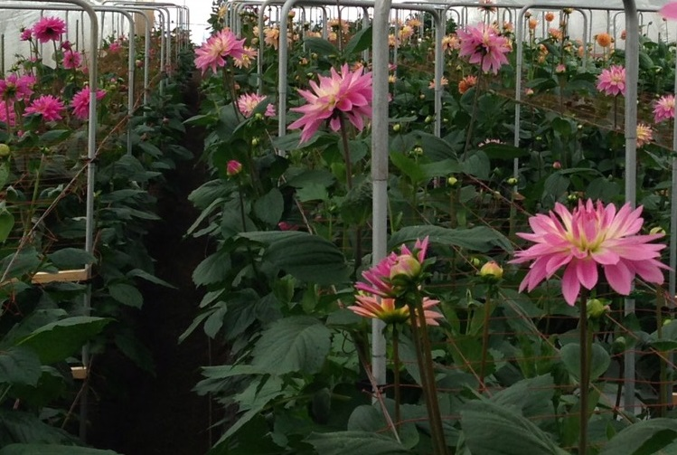
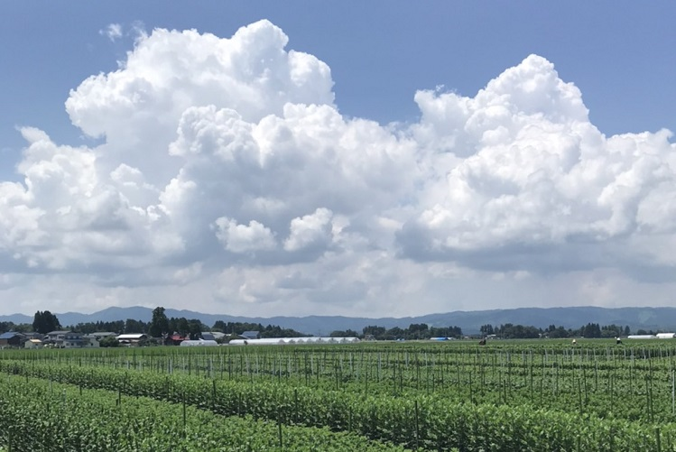
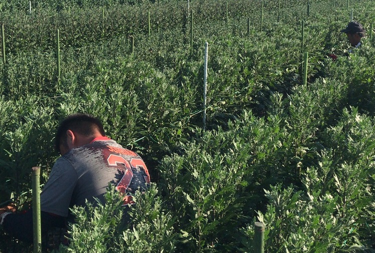

M.F.Cとは

花 を通して 睦合地区 を 未来へ繋げる！
睦合地区 には、 花生産 の歴史が詰まっている!
睦合地区の 農業 を、私達の 手 で盛り上げていく!
有数の花産地 睦合 を 次世代 に 繋げていく ために、
花 を通して 睦合地区 を 未来へ繋げる！
M.F.C とは、『睦合、flower、connection』の略省です。
2012年就農開始、今年で10年目になります。切り花の生産・販売を主に担当しており、
現在組合員3名、社員1名で活動しています。
私達が生まれ育った睦合という地名を残したいと思い、この社名にしました。

睦合地区 には、 花生産 の歴史が詰まっている!
睦合地区における花生産の歴史は古くおよそ50年前、
減反政策を契機により数名の米農家によって県内で先駆けて生産が開始されました。
先人たちの努力によって栽培技術研鑽され、
今日では、県内でもトップクラスの生産量を誇ることが出来るようになりました。

睦合地区の 農業 を、私達の 手 で盛り上げていく!
近年、農業の課題となっている「生産者及び雇用労働者の高齢化」や「後継者不在」、
これらにより、数年の内に離農者が続出し、産地が廃れることが予想されます。
栽培を諦めざるを得なくなった生産者の受け皿となって農地を引き受け、
それに伴う事業拡大で雇用を創出することを目標に、